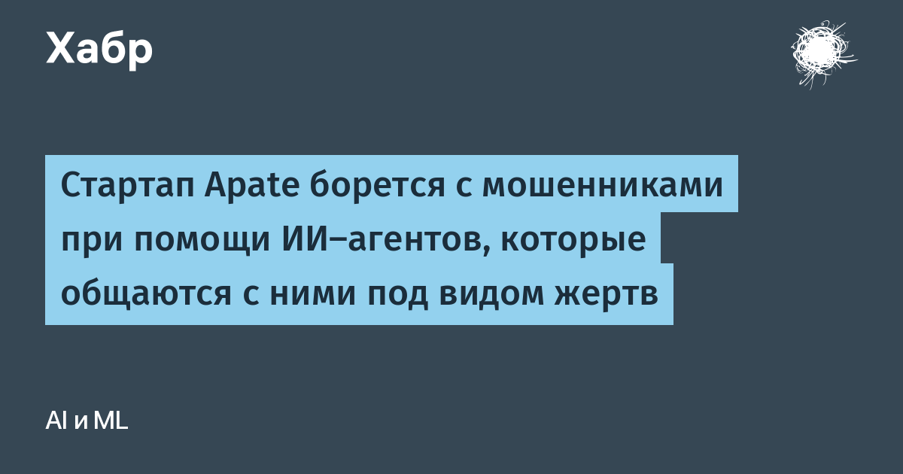

Австралийский стартап Apate превратил ИИ-агентов в приманку для онлайн-мошенников. Тысячи ботов выдают себя за ничего не подозревающих людей: отвечают на подозрительные звонки, письма и сообщения, переходят по фишинговым ссылкам, вступают в группы мошенников в соцсетях и подолгу поддерживают переписку. По данным компании, эта «армия» отняла у аферистов суммарно 17 лет времени в ходе 2,5 млн бесед.
Главная цель — не только спалить время преступников. В таких разговорах мошенники сами раскрывают то, что обычно становится известно лишь после обмана живой жертвы: номера телефонов, банковские счета и криптокошельки, адреса вредоносных сайтов, названия брендов, от которых действуют преступники. Apate передаёт эти сведения клиентам — банкам, телеком-операторам, коммунальщикам и госорганизациям, — чтобы те укрепляли собственные антифрод-системы. Среди заказчиков уже числятся Commonwealth Bank of Australia и TPG Telecom.
Стартап использует как внешние передовые модели, так и собственные, дообученные на диалогах своих же агентов и на исследованиях Университета Маккуори. В августе Apate привлекла $8,15 млн — в раунде участвовали Lobby Capital, OIF Ventures, Investible, Concept Ventures и Baobab Ventures; всего у стартапа около $10 млн. Деньги пойдут на международную экспансию: офис в Лондоне и расширение присутствия в США.
Логика антифрода перевёрнута: вместо детекции после атаки — активное вовлечение злоумышленника до того, как он доберётся до настоящего человека. Дешёвый ИИ-«расходник» обходится дешевле часа работы мошенника, а каждая такая беседа пополняет базу знаний об обмане. Отдельного официального пресс-релиза с этими цифрами у компании нет: данные озвучены основателями в интервью, впервые их подробно описал TechCrunch, а русскоязычный пересказ вышел на Хабре.